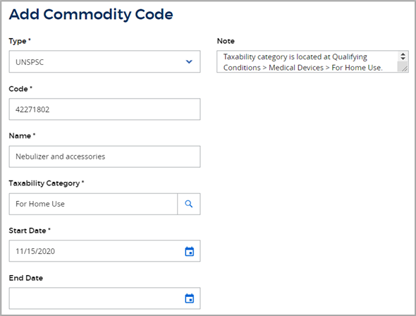

Add custom commodity codes
You may have tax situations for which Vertex-supplied commodity codes do not provide the appropriate taxation. These situations might be:
-
Vertex does not support the commodity code that applies to your products or services, but there is a taxability category that does provides the appropriate taxation. In this case, you can add the commodity code and map it to the taxability category.
-
Vertex does support the commodity code, but your tax situation requires different taxation than the Vertex-supplied data. In this case, you can override the tax treatment for the commodity code.
An example for adding a commodity code
Vertex currently does not provide data for UNSPSC code 42271802, Nebulizer. You want
to add this UNSPSC code to Your Vertex product and map it to the taxability category that applies to medical devices that are for
in-home use. Here is the setup for this user-defined commodity code:

Before you get started
When adding a custom commodity code, consider the earliest historical date for any transactions that use the commodity code. After you determine the appropriate historical date, set the As of Date in the global settings area to this date before you set up the commodity code. For details, refer to Always consider the As of Date.
Adding and mapping a user-defined commodity code
You create a commodity code and map it to a taxability category in one simple procedure:
-
Navigate to My Enterprise > Taxability Driver Management > Commodity Codes.
-
Click ADD.
-
From the Type drop-down list, select the type of commodity code you are creating.
-
In the Code field, enter the full commodity code value as it will be passed from your host system.
-
In the Name field, enter a descriptive name for the commodity code.
-
Click
 in the Taxability Category field and select the category to which you want to map the commodity code.
in the Taxability Category field and select the category to which you want to map the commodity code. -
In the Start Date field, select the date on which the commodity code becomes effective in O Series.
-
In the End Date field, select the date after which the commodity code should no longer be effective in O Series. Leave this field blank if you do not know when the commodity code expires.
-
In the Note field, enter any information that is pertinent to the purpose or usage of the commodity code you are creating.
-
To use the commodity code for both Supplies and Procurement events, select the Share with other business events check box.
-
Click SAVE.
Overriding the taxability of a commodity code
You can override the tax treatment for a commodity code in the following ways:
-
By creating a user-defined commodity code that specifies the same code as a Vertex-supplied commodity code and mpas it to a different taxability category.
-
By creating a Tax Assist rule using the commodityCode and commodityCodeType elements.
When processing a transaction, the Calculation Engine gives user-defined commodity code mappings a higher precedence than Vertex-defined commodity code mappings.
Field descriptions
The table below explains the fields on the Add Commodity Code tab in more detail:
|
Field |
Description |
|
Type |
Select the type of commodity code that you want to create. For information about each type, refer to Commodity codes in O Series. |
|
Code |
Enter the commodity code number exactly as it will be passed to O Series from your host system. O Series does not restrict the format for each type of commodity code. |
|
Name |
Enter a descriptive name for the commodity code. |
|
Taxability Category |
Select the taxability category to which you want to map the commodity code. Click
|
|
Start Date |
Select the date on which the user-defined commodity code becomes effective in O Series. |
|
End Date |
Select the date after which the user-defined commodity code is no longer inactive in O Series. |
|
Share with other business events |
To use the commodity code in both Supplies and Procurement business events, select this check box. |
|
Note |
Enter any information that is pertinent to the purpose or usage of the commodity code you are creating. |
 next to this field to display the
next to this field to display the Related articles
Commodity codes in O Series
UNSPSC commodity codes
NCM commodity codes for Brazilian taxation
Service commodity codes for Brazilian taxation
HSN commodity codes for India taxation
Review the taxability of a commodity code
Identify the commodity code used in a calculation